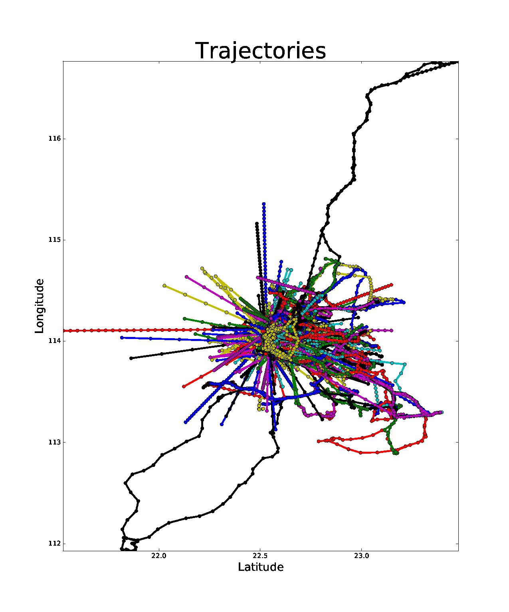

r-Gather Programs
Table of Contents
1 Introduction
The \(r\)-Gather problem was originally posed as a sub-problem in a FOCS 2000 paper about constructing Steiner trees in the face of uncertainty. It was explored in detail by Aggarwal et al. who gave various hardness results and approximation algorithms in the setting of metric spaces. It is natural to study this problem and its variants in \(\mathbb{R}^2\) by exploiting the extra structure available.
In the main paper, we give approximation algorithms for the following problems:
DYNAMIC \(r\)-GATHER: If the \((x,y)\) co-ordinates of the data-set are live and moving, how do we update \(OPT\) efficiently?
DECENTRALIZED \(r\)-GATHER: Say the data-set is spread among several data-banks. How do we compute \(OPT\) with minimal co-ordination?
DECENTRALIZED DYNAMIC \(r\)-GATHER: What if the data is live, and the computation is required to be as decentralized as possible?
The sections that follow give literate Python implementations of these algorithms 1
2 About the Test Data
 Figure 1 on the left depicts trajectories of 9386 cars, fitted with GPS sensors, driving around Shenzhen, China for a single day. Here is a video of a small subset of them evolving in time.
{kind=link}
The GPS co-ordinates from the raw data set (consisting of latitude and longitude given in degrees) have been "normalized"; so we can assume the cars have been sampled in lock-step, every 5 minutes.
The goal of the \(r\)-Gather problem and its variants is – broadly speaking – to fuzz these trajectories for anonymity, yet still preserve enough structure to make useful inferences.
3 The Implementations
I will be implementing each of the five algorithms as classes in rGather.py. These classes will behave as
namespaces for different runs of the algorithms. There will be no dependence between the classes. That will
allow us to unit-test them individually.
Each class comes with its own main.py file to customizing the needed logic. But the module file remains the same. I will not be documenting the logic of the main.py files in this literate document, for they are self-explanatory.
The statistics of the clustering, on the other hand will be visualized by the plotStatistics method It will get its own axes artist object(s) on which to plot these statistics.
I intend to use the classes as described below:
- Test the performance of various algorithms on a stored data-set
- Initialize (but not necessarily start!) one or more \(r\)-Gather routines with the input-data.
- Every class has a method called
generateState({config})which runs the actual algorithm on the provided input. The computed clusterings and statistics of the run are stored as member variables or maybe as a dictionary. - Each class also has one or more functions for visualizing the clusterings or run-time statistics so gathered.
- The dynamic algorithms also come with one or more animation functions
interacting with the
generateState()via theyieldstatement and theanimation.FuncAnimation(..)HOF. - Every method itself will have routines local to its scope to help abstracting away its logic. Strive to make these local routines pure. Moreover, make all the needed module imports local. That will help us via property checkers or other unit-testing mechanisms.
- Stress test an algorithm adversarially via the little GUI
- The user enters the points by double-clicking on the canvas.
- To set the \(r\)-parameter he will
- Press r or R key
- Then enter the decimal digits of this parameter.
- After finishing, press enter, to execute the algorithm.
- To clear the canvas and reset the algorithm class which is holding the state press c or C key.
- Start inputting a new cloud of points to have a new run of the algorithm.
Finally, every run will need to record the statistics inside a YAML or an XML file. XML might be simpler if you will be using Beautiful soup. Besides the documents are far easier to view in the browser. YAML cannot be folded up unfortunately. I will absolutely need the latter for viewing small-data-sets.
There must be a function which produces this output! The following list should be produced for each point-cloud data-set. Note that the results from different clustering algorithms will be stored in the same file.
- Static RGather
- Comment String. Allowed to be arbitrarily long.
- The number of points
- (x,y) coods of the points
- List of clusterings computed different algorithms.
\(\forall\) clustering
- Algorithm Used
- \(r\) parameter
- Number of clusters computed.
- Now the actual clusters!
\(\forall\) clusters
- The number of points in the cluster
- The diameter of the cluster
- The actual points of the cluster.
We could stuff everything ever into one data-file but that would be too complicated!
3.1 The Main module file rGather.py
Here a bird's eye view of rGather.py after tangling.
#!/usr/bin/python
import matplotlib as mpl, numpy as np, scipy as sp, sys, math, colorsys
from matplotlib import pyplot as plt, animation
import networkx as nx, sklearn as sk
from abc import ABCMeta, abstractmethod
from haversine import haversine # https://pypi.python.org/pypi/haversine
<<ALGO_JIEMIN_DECENTRALIZED_STATIC>>
<<ALGO_AGGARWAL_STATIC>>
<<ALGO_AGGARWAL_STATIC_R2L2>>
<<ALGO_JIEMIN_DYNAMIC>>
def getRandomColor():
""" Ripped from http://goo.gl/SMlEaU"""
golden_ratio_conjugate = 0.618033988749895
h = np.random.rand()
h += golden_ratio_conjugate
h %= 1.0
return colorsys.hsv_to_rgb(h, 0.7, 0.9)
3.2 Decentralized Static \(r\)-Gather (4-Approx)
This algorithm is implemented as a class as described in the previous sections. Each instantiation is an "environment" in which the algorithm runs. To construct the class, we pass the cluster parameter \(r\) and the co-ordinates of the point-cloud. Some of the class variables stores various statistics gathered while executing the algorithm on the given point cloud.
In the coming subsections, I'll describe each of the noweb references of the code-block below. These references are just the methods of this class grouped logically.
class AlgoJieminDecentralizedStatic:
<<SETUP_AND_CLEANUP>>
<<GENERATE_CLUSTERS>>
<<PLOT_CLUSTERS>>
<<PLOT_STATISTICS>>
3.2.1 Setup and Cleanup
This chunk is self-explanatory. The constructor initializes state variables needed as input along with data variables needed for a post-hoc analysis. These latter will be computed during the algorithm's run.
Note that the final result of the clustering algorithm is stored in self.computedClusterings,
of type [[Int]], i.e. a list of list of indices. These indices correspond to the row-numbers
of the input numpy array pointCloud: each row in pointCloud corresponds to a point in \(\mathbb{R}^2\).
def __init__(self, r, pointCloud):
""" r : Cluster parameter
pointCloud : An n x 2 numpy array where n is the number
of points in the cloud and each row contains
the (x,y) coordinates of a point."""
self.r = r
self.pointCloud = pointCloud
self.computedClusterings = []
self.algoName = 'Decentralized Static r-Gather'
def clearAllStates(self):
self.r = None
self.pointCloud = []
self.computedClusterings = []
def clearComputedClusteringsAndR(self):
self.r = None
self.computedClusterings = []
3.2.2 Generate Clusters
The algorithm. Finally! Note that this method is NOT called by the constructor when initializing the class. This is by design to gain extra flexibility during experimental analyses.
def generateClusters(self, config={'mis_algorithm': 'networkx_random_choose_20_iter_best'}):
""" config : Configuration parameters which might be needed
for the run.
Options recognized are (ALL LOWER-CASE)
1. mis_algorithm:
A. 'networkx_random_choose_20_iter_best', default
B. 'riksuggestion'
"""
import itertools
import numpy as np
import pprint as pp
import copy
<<FIND_NEAREST_NEIGHBOURS>>
<<FIND_MAXIMAL_INDEPENDENT_SET_NEIGHBOURHOODS>>
<<EXTRACT_UNIQUE_ELMENTS_FROM_LIST>>
<<DISTANCE_FUNCTION>>
NrDistances, Nr = findNearestNeighbours( self.pointCloud,
self.r )
S = findMaximalIndependentOfNeighbourhoods( Nr.tolist( ),
config[ 'mis_algorithm' ] )
indicesOfPointsCoveredByS = set(list(itertools.chain.from_iterable(S)))
indicesOfPointsMissedByS = set(range(len(self.pointCloud))).difference(indicesOfPointsCoveredByS)
assert(indicesOfPointsCoveredByS.union(indicesOfPointsMissedByS ) == set(range(len(self.pointCloud))) )
# For each point missed by S, find which elements of its r-neighbourhood lies inside a member of S.
pNrS = {} # A dictionary which maintains this information.
for index in indicesOfPointsMissedByS:
pNrS[index] = []
#Coordinates of the point whose index is 'index'
ptIndex = np.array( self.pointCloud[index] )
neighborIndices = Nr[index][1:]
for nbIndex in neighborIndices:
for s in S:
if nbIndex in s:
ptnbIndex = np.array(self.pointCloud[nbIndex])
dist = np.linalg.norm( ptIndex - ptnbIndex ) # Euclidean distance between the points
pNrS[index].append( (s, dist) )
break # since members of S are disjoint there is no reason to continue to iterate over members of S to check containment of nbindex
# Move onto the next member of neighbourIndices.
# print "\nNr = " , Nr
# print "\nS = " , S
# print "\npointsMissed", indicesOfPointsMissedByS
# print "\npNrS = " ; pp.pprint(pNrS, width=20 )
# Now for each point select the member of S that is closest using this dictionary.
# Edit this dictionary in place, by keeping only the closest neighbourhood.
pNrS_trimmed = {}
for (key, value) in pNrS.iteritems():
distmin = float("inf") # Positive infinity
for (s, dist) in value:
if dist<distmin:
smin = s
distmin = dist
#pNrS_trimmed[key] = (smin,distmin) # For debugging purposes.
pNrS_trimmed[key] = smin
#print "\npNrS_trimmed = "; pp.pprint(pNrS_trimmed, width=1)
# With pNrS_trimmed we obtain the final clustering. Yay!
# by "inverting" this key-value mapping
augmentedSets = [s for s in S if s not in pNrS_trimmed.values()] # The sets just included are not augmented at all.
pNrS_codomain = extractUniqueElementsFromList(pNrS_trimmed.values())
for s in pNrS_codomain:
smodified = copy.copy(s) # This copying step is SUPER-CRUCIAL!!! if you just use =, you will just be binding object pointed to by s to smod. Modifying smod, will then modify s, which will trip up your future iterations! I initially implemented it like this and got tripped up
for key, value in pNrS_trimmed.iteritems():
if s == value:
smodified.append(key) # augmentation step
augmentedSets.append(smodified)
self.computedClusterings = augmentedSets
#print "\nself.computedClusterings = "; pp.pprint(self.computedClusterings,width=1)
print "Numpoints = " , len( self.pointCloud ) , \
" r = " , self.r , \
" Number of Clusters Computed = ", len( self.computedClusterings ), \
" Algorithm used: " , self.algoName
sys.stdout.flush()
The noweb references above are helper functions which I'll describe next.
FIND NEAREST NEIGHBOURS
Given a point-cloud, the following function computes the \(k\)-nearest neighbours of each point and their corresponding distances as required by generateClusters.
WARNING! The neighbour list as computed here consist of the 0th, 1st, 2nd, …., (k-1)th nearest neighbours. The 0th neighbour is a hack, which allows us to identify the point about whose neighbour list we are talking about.
def findNearestNeighbours(pointCloud, k):
""" pointCloud : 2-d numpy array. Each row is a point
k : The length of the neighbour list to compute.
"""
from sklearn.neighbors import NearestNeighbors
import sklearn
import numpy as np
import sys
X = np.array(pointCloud)
nbrs = NearestNeighbors(n_neighbors=k, algorithm='ball_tree').fit( X )
distances, indices = nbrs.kneighbors(X)
return distances, indices
The output variable is a list of neighbour-lists reported by sklearn: \(N[i]\) denotes the index-list of the \(k\)-nearest neighbours of point \(i\). The indices are specified in increasing order of distance of the corresponding points from point i.
\(NDistances[i]\) is the corresponding list of distances of the \(k\)-nearest neighbours of point \(i\).
In particular, \(N[i][j]\) and \(NDistances[i][j]\) respectively denote the index of and distance between the \(j\) th nearest neighbour of \(i\).
FINDING A MAXIMAL INDEPENDENT SET OF NEIGHBOURHOODS
Given a collection of point-sets in the plane, we can use networkX to extract a large maximally independent – wrt intersection– subcollection.
For that, I construct a graph where
- Each point-set corresponds to a vertex in the graph and vice-versa
- There exists an edge between two vertices in the graph if and only if, the corresponding point-sets have a non-empty intersection.
def findMaximalIndependentOfNeighbourhoods( nbds , mis_algorithm ):
import networkx as nx
G = nx.Graph()
G.add_nodes_from(range(len(nbds)))
# If two neighbourhoods intersect, draw
# a corresponding edge in the graph.
for i in range(len(nbds)):
for j in range(i+1,len(nbds)):
intersection_of_nbds_ij = [ val for val in nbds[i] if val in nbds[j] ]
if len(intersection_of_nbds_ij) >= 1:
G.add_edge(i,j)
# Having constructed the neighbourhood, we proceed to find a good MIS
# The quality of the solution is affected by the size of the MIS
# The larger the maximal independent set, the better it is
if mis_algorithm == 'networkx_random_choose_20_iter_best':
candidateSindices = [ nx.maximal_independent_set(G) for i in range(20) ]
#for candidate in candidateSindices: # for debugging
# print candidate
sIndices = [] # Start value for finding the maximum
for candidate in candidateSindices: # Pick the largest independent set over 10 iterations
if len(candidate) > len(sIndices): # Yay! Found a larger independent set!
print "Larger set!"
sIndices = candidate
elif mis_algorithm == 'riksuggestion':
# Give cluster centers a special attribute marking it as a center.
distanceFromRthNearestNeighbourDict = {}
for nbd, i in zip( nbds, range( len(nbds) )): # Note that each neighbourhood's 0th element is the center, and that the nbd indices are sorted by distance from this zeroth element. So -1 makes sense
nbdCenterCoords = self.pointCloud[ nbd[0] ]
nbdFarthestNeighbourCoords = self.pointCloud[ nbd[-1] ]
distanceFromRthNearestNeighbourDict[i] = np.linalg.norm( [ nbdCenterCoords[0] - nbdFarthestNeighbourCoords[0] ,
nbdCenterCoords[1] - nbdFarthestNeighbourCoords[1] ] )# Abstract this away with the distance function later.
nx.set_node_attributes( G, 'distanceFromRthNearestNeighbour', distanceFromRthNearestNeighbourDict )
import collections
# Generate the order to remove the vertices
orderOfVerticesToDelete = collections.deque(sorted( range(len(nbds)) , key = lambda x: G.node[x][ 'distanceFromRthNearestNeighbour' ] ))
#print orderOfVerticesToDelete
#for i in orderOfVerticesToDelete:
# print G.node[i]['distanceFromRthNearestNeighbour']
sIndices = [ ]
for i in orderOfVerticesToDelete:
try:
node = orderOfVerticesToDelete[i]
nlist = G.neighbors( node )
for n in nlist:
try:
G.remove_edge( node, n ) # Remove all edges emanating
except nx.NetworkXError:
continue
G.remove_node( node ) # Remove the node itself
for n in nlist:
try:
G.remove_node( n ) # Remove all the neighbours.
except nx.NetworkXError:
continue
sIndices.append( node )
except nx.NetworkXError:
continue
# while( len( orderOfVerticesToDelete ) >= 1 ): # This list changes during the iteration.
# try:
# node = orderOfVerticesToDelete[0]
# except nx.NetworkXError:
# print "Removing carcass"
# orderOfVerticesToDelete.popleft()
# else:
# sIndices.append( node ) # The very fact no exception was thrown means that you can freely add it to the independent set
# nlist = G.neighbors( node )
# # Delete all the edges emanating from elements of nlist.
# # The fact that this did not throw an exception means 'node' still exists in the graph G
# for n in nlist:
# G.remove_edge( node, n ) # Remove all edges emanating
# G.remove_node( node ) # Remove the node itself
# for n in nlist:
# G.remove_node( n ) # Remove all the neighbours.
# orderOfVerticesToDelete.popleft()
else:
import sys
print "Maximum independent Set Algorithm option not recognized!"
sys.exit()
# If two neighbourhoods intersect, draw
# a corresponding edge in the graph.
# print sIndices
for i in sIndices:
for j in sIndices:
if j > i:
intersection_of_nbds_ij = [val for val in nbds[i] if val in nbds[j] ]
if len(intersection_of_nbds_ij) >= 1:
print "Neighbourhoods intersect!"
sys.exit()
# print "Exiting!"
# import sys
# sys.exit()
return [ nbds[s] for s in sIndices ]
def extractUniqueElementsFromList( L ):
uniqueElements = []
for elt in L:
if elt not in uniqueElements: # Just discovered a brand new element!!
uniqueElements.append(elt)
return uniqueElements
3.2.3 Plot Clusters
Once the clustering has been constructed we can now visualize it.This function in particular will continue to be in flux: so I'll let the code do the talking here. Just note that the algorithm object does not store a reference to the axes object on which the clusterings will be plotted. Hence we have to explicitly pass the axes object when calling this method. . This is a conscious design goal! 'Twill help us in visually comparing the cluters outputted by the different approximation algorithms for the same problem. Depending on the algorithms to be compared construct a fig object with multiple axes objects. Then each visualization routine of an algorithm gets an axes-object reference from this figure.
def plotClusters(self, ax ,
pointSize=200,
marker='o' ,
pointCloudInfo='',
annotatePoints=True):
from scipy import spatial
import numpy as np, matplotlib as mpl
import matplotlib.pyplot as plt
# Plot point-cloud
xs = [x for (x,y) in self.pointCloud]
ys = [y for (x,y) in self.pointCloud]
ax.plot(xs,ys,'bo', markersize=3)
ax.set_aspect(1.0)
if annotatePoints==True:
# Annotate each point with a corresponding number.
numPoints = len(xs)
labels = ['{0}'.format(i) for i in range(numPoints)]
for label, x, y in zip(labels, xs, ys):
ax.annotate( label ,
xy = (x, y) ,
xytext = (-3, 0) ,
textcoords = 'offset points',
ha = 'right' ,
va = 'bottom')
# Overlay with cluster-groups.
for s in self.computedClusterings:
clusterColor = getRandomColor()
xc = [ xs[i] for i in s ]
yc = [ ys[i] for i in s ]
# Mark all members of a cluster with a nice fat dot around it.
#ax.scatter(xc, yc, c=clusterColor,
# marker=marker,
# s=pointSize)
#ax.plot(xc,yc, alpha=0.5, markersize=1 , markerfacecolor=clusterColor , linewidth=0)
#ax.set_aspect(1.0)
# For some stupid reason sp.spatial.ConvexHull requires at least three points for computing the convex hull.
if len(xc) >= 3 :
hull = spatial.ConvexHull( np.array(zip(xc,yc)) , qhull_options="QJn" ) # Last option because of this http://stackoverflow.com/q/30132124/505306
hullPoints = np.array( zip( [ xc[i] for i in hull.vertices ],
[ yc[i] for i in hull.vertices ] ) )
ax.add_patch( mpl.patches.Polygon(hullPoints, alpha=0.5,
facecolor=clusterColor) )
elif len(xc) == 2:
ax.plot( xc,yc, color=clusterColor )
ax.set_aspect(1.0)
ax.set_title( self.algoName + '\n r=' + str(self.r), fontdict={'fontsize':15})
ax.set_xlabel('Latitude', fontdict={'fontsize':10})
ax.set_ylabel('Longitude',fontdict={'fontsize':10})
#ax.get_xaxis().set_ticks( [] , fontdict={'fontsize':10})
#ax.get_yaxis().set_ticks( [], fontdict={'fontsize':10} )
ax.grid(b=True)
3.2.4 Plot Statistics
Axes artist objects are Hashable! We use this to get a lot of flexibility during plotting! I verified this using this answer http://stackoverflow.com/a/3460747/505306
The nice thing about these statistics, are that they along with cluster sizes, can be rendered online as we keep filling in more and more points by appropriate bindings to button press events.
def plotStatistics(self, axStatsDict ):
""" axStatsDict, specifies the mapping of axes objects to the statistic
being plotted."""
def plotConvexHullDiameters(ax):
pass
def plotMinBoundingCircleDiameters(ax):
pass
def plotClusterPopulationSizes(ax):
barHeights = map(len, self.computedClusterings )
numBars = len(barHeights)
ax.bar( range(numBars) ,barHeights, width=1.0, align='center')
ax.set_title('Number of points per Cluster', fontdict={'fontsize':30})
ax.set_aspect(1.0)
ax.grid(b=True)
for ax, statistic in axStatsDict.iteritems():
if statistic == 'convexHullDiameters':
plotConvexHullDiameters(ax)
elif statistic == 'minBoundingCircleDiameters':
plotMinBoundingCircleDiameters(ax)
elif statistic == 'clusterPopulationSizes':
plotClusterPopulationSizes(ax)
else:
pass
3.3 Aggarwal's Static \(r\)-Gather (2-Approx)
Since the algorithm can work for any metric space, I'll implement it as an abstract
base class called AlgoAggarwalStatic. For a specific metric-space, it will run as a
method in a subclass of this ABC. This sub-class will implement the distance
function and other visualization routines and possibly faster neighbour search routines
than the default one provided in the base class viz. that of the brute force quadratic
search. You might even want to consider making this neighbour search an abstract method
when dealing with trajectory data.
The following code block are birds-eye views of AlgoAggarwalStatic and AlgoAggarwalR2L2.
class AlgoAggarwalStatic:
__metaclass__ = ABCMeta
def __init__(self,r,pointCloud):
""" Even though this is an abstract class, a subclass is
allowed to call the constructor via super.
However, a user cannot instantiate a class with this
method from his code."""
pass
@abstractmethod
def dist(p,q):
""" A distance function of a metric space.
distance between points p and q. Implemented
by the subclass. """
pass
@abstractmethod
def rangeSearch( pointCloud, radius):
""" Given a set of points in the metric space, and a radius value
find all the neighbours for a point in 'pointCloud' in a ball of radius,
'radius', for all points in 'points'. Depending on the metric space
an efficient neighbour search routine will use different tricks """
pass
<<GENERATE_CLUSTERS_AGGARWAL>>
To generate neighbor relations for the dynamic-case, since I don't have a good neighbor search routine for arbitrary metric spaces.
I do this via the getNeighbors/.py code in the DynamicInput folder
The following concrete class inheriting from AlgoAggarwalStatic is implemented for the trajectory case
class AlgoJieminDynamic( AlgoAggarwalStatic ):
def __init__(self, r, pointCloud, memoizeNbrSearch = False, distances_and_indices_file=''):
""" Initialize the AlgoJieminDynamic
memoizeNbrSearch = this computes the table in the constructor itself. no need for a file. The file option below, is only useful for large runs.
distances_and_indices_file = must be a string identifer for the file-name on disk.
containing the pairwise-distances and corresponding index numbers
between points. I had to appeal to this hack, since sklearn's algorithm to search in arbitrary metric spaces does not work for my case.
Also the brute-force computation, which I initially implemented took far too long.
Since don't know how to do the neighbor computation for arbitrary metric spaces, I just precompute
everything into a table, stored in a YAML file.
"""
from termcolor import colored
import yaml
# len(trajectories) = number of cars
# len(trajectories[i]) = number of GPS samples taken for the ith car. For shenzhen data set this is
# constant for all cars.
self.r = r
self.pointCloud = pointCloud # Should be of type [ [(Double,Double)] ]
self.computedClusterings = []
self.algoName = 'r-Gather for trajectory clustering'
self.superSlowBruteForce = False
if memoizeNbrSearch :
numpts = len(self.pointCloud)
(self.nbrTable_dist, self.nbrTable_idx) = ([], [])
for i in range(numpts):
print colored ('Calculating distance from '+str(i), 'white', 'on_magenta',['underline','bold'])
traj_i = pointCloud[i]
distances_and_indices = []
for j in range(numpts):
traj_j = pointCloud[j]
dij = self.dist( traj_i, traj_j)
distances_and_indices.append((dij,j))
print '......to j= ' , j, ' dij= ', dij
# Now sort the distances of all points from point i.
distances_and_indices.sort(key=lambda tup: tup[0]) # http://tinyurl.com/mf8yz5b
self.nbrTable_dist.append( [ d for (d,idx) in distances_and_indices ] )
self.nbrTable_idx.append ( [ idx for (d,idx) in distances_and_indices ] )
elif distances_and_indices_file != '': # Non empty file name passed
print colored("Started reading neighbor file", 'white','on_magenta',['bold','underline'])
stream = open(distances_and_indices_file,'r')
filecontents = yaml.load(stream) # This will be a dictionary
print colored("Finished reading neighbor file", 'white','on_green',['bold','underline'])
self.nbrTable_dist = filecontents['Distances']
self.nbrTable_idx = filecontents['Indices']
else:
self.superSlowBruteForce = True
def clearAllStates(self):
self.r = None
self.pointCloud = []
self.computedClusterings = []
def clearComputedClusteringsAndR(self):
self.r = None
self.computedClusterings = []
def dist(self, p,q):
""" distance between two trajectories p and q. The trajectories form a metric space under this distance
If you visualize the given table as a microsoft excel sheet, where each column represents the trajectory
of a car, then the distance between two trajectories is the max of L infinity norm of the difference of two
columns.
p,q :: [ [Double,Double] ]. The length of p or q, indicates the number of GPS samples taken
"""
#print "Inside distance function"
#print "p is ", p.shape, ' ' , p
#print "q is ", q.shape, ' ' , q
dpq = 0
for t in range(len(p)):
# M is the euclidean distance between two points at time t.
M = np.sqrt( abs( (p[t][0]-q[t][0])**2 + (p[t][1]-q[t][1])**2 ) )
if M > dpq:
dpq = M
#print p, q, dpq, ' ' , np.sqrt( (p[0][0]-q[0][0])**2 + (p[0][1]-q[0][1])**2)
#from termcolor import colored
#print colored( str(dpq) , 'white', 'on_red', ['bold'] ) # This to make sure that dpq being returned is a sane number.
return dpq
def findNearestNeighbours(self, pointCloud, k):
"""Return the k-nearest nearest neighbours"""
import numpy as np, itertools as it
from termcolor import colored
numpts = len(pointCloud)
# Calling sklearn works only on R2L2 case for some reason. So for the moment, the only option is to use brute-force techniques.
if self.superSlowBruteForce :
print colored('Calling Super-slow brute Force kNN' , 'white', 'on_magenta', ['bold'])
distances, indices = ([], [])
for i in range(numpts):
traj_i = pointCloud[i]
distances_and_indices = []
for j in range(numpts):
traj_j = pointCloud[j]
dij = self.dist( traj_i, traj_j)
distances_and_indices.append((dij,j))
# Now sort the distances of all points from point i.
distances_and_indices.sort(key=lambda tup: tup[0]) # http://tinyurl.com/mf8yz5b
distances.append( [ d for ( d, _ ) in distances_and_indices[0:k] ] )
indices.append ( [ idx for ( _, idx) in distances_and_indices[0:k] ] )
#print "Distance matrix is ", np.array(distances)
#print "Index matrix is " , np.array(indices)
print colored('Finished Super-slow brute Force' , 'white', 'on_green', ['bold', 'underline'])
return distances, indices
else: # This means the table has already been computed or read in from a file in the constructor itself
print colored('Calling Memoized brute Force kNN' , 'white', 'on_magenta', ['bold'])
#zipDistIdx = zip (self.nbrTable_dist, self.nbrTable_idx)
#print zipDistIdx[0][0:k]
distances = [ [d for d in self.nbrTable_dist[i][0:k]] for i in range(numpts)]
indices = [ [idx for idx in self.nbrTable_idx[i][0:k] ] for i in range(numpts)]
#print "Distance matrix is ", np.array(distances)
#print "Index matrix is " , np.array(indices)
print colored('Finished Memoized brute Force kNN' , 'white', 'on_green', ['bold', 'underline'])
return distances, indices
def rangeSearch(self, pointCloud, radius):
""" A range search routine.
Given a point-cloud, return the neighbours within a distance of 'radius'
for every element of the pointcloud. return the neighbour indices , sorted
according to distance. """
import numpy as np
from termcolor import colored
import itertools as it
import sys, time
print colored("Inside trajectory rangeSearch",'white', 'on_magenta',['bold'])
numpts = len(pointCloud)
if self.superSlowBruteForce:
distances, indices = ([], [])
for i in range(numpts):
traj_i = pointCloud[i]
distances_and_indices = []
for j in range(numpts):
traj_j = pointCloud[j]
dij = self.dist( traj_i, traj_j)
if dij < radius: # We are doing range search
distances_and_indices.append((dij,j))
# Now sort the distances of all points from point i.
distances_and_indices.sort(key=lambda tup: tup[0]) # http://tinyurl.com/mf8yz5b
distances.append([d for (d, _ ) in distances_and_indices])
indices.append ([idx for (_,idx) in distances_and_indices])
#print "Radius specified was ", colored(str(radius), 'white', 'on_green', ['bold'])
#print "Distance matrix is \n", np.array(distances)
#print "Index matrix is \n" , np.array(indices)
print colored('Finished rangeSearch Neighbors', 'magenta', 'on_grey', ['bold', 'underline'])
return distances, indices
else: # This means the table has already been computed or read in from a file in the constructor itself
print colored('Calling Memoized brute Force rangeSearch' , 'yellow', 'on_magenta', ['bold'])
start = time.time()
distances, indices = ([], [])
for i in range(numpts):
d_npbr = np.array(self.nbrTable_dist[i])
idx_npbr = np.array(self.nbrTable_idx[i], dtype=int)
distances_and_indices = zip ( d_npbr, idx_npbr )
#################################### Bench
tmpd = []
tmpidx = []
for (d, idx) in distances_and_indices:
if d<radius:
tmpd.append(d)
tmpidx.append(idx)
distances.append(tmpd)
indices.append(tmpidx)
######################################### Gold : But this compares distance twice
#distances.append([d for (d , _ ) in distances_and_indices if d<radius ])
#indices.append ([idx for (d , idx) in distances_and_indices if d<radius ])
end = time.time()
print "Time taken for Range Search is ", end-start
#print "Distance matrix is ", np.array(distances)
#print "Index matrix is " , np.array(indices)
print colored('Finished Memoized brute Force rangeSearch' , 'yellow', 'on_blue', ['bold', 'underline'])
return distances, indices
def plotClusters(self, ax ,
trajThickness = 10 ,
marker = 'o' ,
pointCloudInfo = '' ,
annotatePoints = False):
""" Plot the trajectory clusters computed by the algorithm."""
from scipy import spatial
import numpy as np, matplotlib as mpl
import matplotlib.pyplot as plt
import colorsys
import itertools as it
trajectories = self.pointCloud
numCars = len(trajectories)
numClusters = len(self.computedClusterings)
# Generate equidistant colors
colors = [(x*1.0/numClusters, 0.5, 0.5) for x in range(numClusters)]
colors = map(lambda x: colorsys.hsv_to_rgb(*x), colors)
# An iterator tht creates an infinite list.Ala Haskell's cycle() function.
marker_pool =it.cycle (["o", "v", "s", "D", "h", "x"])
for clusIdx, cluster in enumerate(self.computedClusterings):
clusterColor = colors[clusIdx] # np.random.rand(3,1)
for carIdx in cluster:
xdata = [point[0] for point in trajectories[carIdx]]
ydata = [point[1] for point in trajectories[carIdx]]
# Every line in a cluster gets a unique color
line, = ax.plot(xdata, ydata, 'o-')
line.set_color(clusterColor)
line.set_markeredgecolor('k')
# Cluster center i.e. cluster[0] is made bolder and thicker. Think of it as a highway
isClusterCenter = (carIdx == cluster[0])
line.set_linewidth(trajThickness + 3*isClusterCenter)
line.set_alpha(0.5 + 0.5*isClusterCenter)
# Only highways are marked with markers
if isClusterCenter:
line.set_marker( next(marker_pool) )
line.set_markersize(14)
line.set_markeredgewidth(2)
line.set_markeredgecolor('k')
#line.set_markevery(3)
ax.set_title( self.algoName + '\n r=' + str(self.r), fontdict={'fontsize':20})
ax.set_xlabel('Latitude', fontdict={'fontsize':15})
ax.set_ylabel('Longitude',fontdict={'fontsize':15})
#ax.grid(b=True)
def animateClusters(self, ax, fig, lats, longs,
interval_between_frame=200,
lineTransparency = 0.55,
markerTransparency = 1.0,
saveAnimation=False):
"""Instead of viewing the trajectories like a bowl of spaghetti, watch them
evolve in time. Each cluster gets assigned a unique color just like in plotClusters
interval_between_frames is in milliseconds.
"""
print lats, longs
numCars = len(self.pointCloud)
numClusters = len(self.computedClusterings)
numSamples = len(self.pointCloud[0])
# Generate equidistant colors
colors = [(x*1.0/numClusters, 0.5, 0.5) for x in range(numClusters)]
colors = map(lambda x: colorsys.hsv_to_rgb(*x), colors)
# For each car create a trajectory object.
trajectories = []
for clusIdx, cluster in enumerate(self.computedClusterings):
print "Setting line"
linecolor = colors[clusIdx]
linecolor = ( linecolor[0], linecolor[1], linecolor[2] , lineTransparency) # Augment with a transparency
markercolor = (linecolor[0], linecolor[1], linecolor[2], markerTransparency)
for traj in cluster:
print "---< Line Set"
line, = ax.plot([],[], lw=3, markerfacecolor=markercolor, markersize=5)
line.set_marker('o')
line.set_c(linecolor)
trajectories.append(line)
#ax.set_title('r= ' + str(self.r) + + ' Clusters= ', str(numClusters), fontdict={'fontsize':40})
ax.set_xlabel('Latitude', fontdict={'fontsize':20})
ax.set_ylabel('Longitude', fontdict={'fontsize':20})
# A special dumb initial function.
# Absolutely essential if you do blitting
# otherwise it will call the generator as an
# initial function, leading to trouble
def init():
#global ax
print "Initializing "
return ax.lines
# Update the state of rGather
def rGather():
""" Run the online r-gather algorithm as the cars
move around. TODO: Make this function itself call
another generator which is revealing the data piece
by piece. Generators all the way down! Chaining of
several functions and lazy evaluation!!
"""
for i in range(numSamples):
for car in range(numCars):
xdata = lats [0:i+1,car]
ydata = longs[0:i+1,car]
trajectories[car].set_data( xdata, ydata )
yield trajectories, i
# Separating the animateData and the rGather generator function allows
def animateData(state, fig, ax):
""" Render the trajectories rendered by the rGather algorithms
and add fancy effects.
"""
trajectories = state[0] # All trajectories
currentTime = state[1] # The time at which to animate
if currentTime > 1:
for car in range(len(trajectories)):
trajectories[car].set_markevery( (currentTime,currentTime) )
return trajectories
# Call the animator. blit=True means only re-draw the parts that have changed.
# Ensures better speed
anim = animation.FuncAnimation(fig, animateData, rGather(),
init_func=init, interval=200, blit=False, fargs=(fig,ax))
# The draw commands are very important for the animation to be rednered.
fig.canvas.draw()
plt.show()
#anim.save('shenzen_show.mp4', fps=5, extra_args=['-vcodec', 'libx264'])
The following concrete class inheriting from AlgoAggarwalStatic is implemented for the \(L^2\) metric
in \(\mathbb{R}^2\).
class AlgoAggarwalStaticR2L2( AlgoAggarwalStatic ):
def __init__(self, r, pointCloud):
self.r = r
self.pointCloud = pointCloud
self.computedClusterings = []
self.algoName = 'Metric Space Static r-Gather applied to R2L2'
#super( AlgoAggarwalStaticR2L2, self ).__init__( self.r, self.pointCloud )
def clearAllStates(self):
self.r = None
self.pointCloud = []
self.computedClusterings = []
def clearComputedClusteringsAndR(self):
self.r = None
self.computedClusterings = []
def dist(self, p,q):
""" Euclidean distance between points p and q in R^2 """
return np.linalg.norm( [ p[0]-q[0] ,
p[1]-q[1] ] )
def findNearestNeighbours(self,pointCloud, k):
""" pointCloud : 2-d numpy array. Each row is a point
k : The length of the neighbour list to compute.
"""
from sklearn.neighbors import NearestNeighbors
import numpy as np
import sys
X = np.array(pointCloud)
nbrs = NearestNeighbors(n_neighbors=k, algorithm='ball_tree').fit(X)
distances, indices = nbrs.kneighbors(X)
return distances, indices
def rangeSearch(self, pointCloud, radius):
""" A wrapper for a good neighbour search routine provided by Scipy.
Given a point-cloud, return the neighbours within a distance of 'radius'
for every element of the pointcloud. return the neighbour indices , sorted
according to distance. """
import numpy as np
import sys
from scipy import spatial
X = np.array( pointCloud )
mykdtree = spatial.KDTree( X )
nbrlists = list( mykdtree.query_ball_point( X, radius) )
distances = []
for index in range(len(nbrlists)):
def fn_index( i ): # Distance function local to this iteration of the loop
return np.linalg.norm( [ X[i][0] - X[index][0] ,
X[i][1] - X[index][1] ] )
# Replace the unsorted array with the sorted one.
nbrlists[index] = sorted( nbrlists[index], key = fn_index )
# Get corresponding distances, which will now naturally be in sorted order.
distances.append( map( fn_index, nbrlists[ index ] ) )
indices = nbrlists # Just a hack, too lazy to change nbrlists to the name indices above.
return distances, indices
<<PLOT_CLUSTERS>>
<<PLOT_STATISTICS>>
IMPORTANT NOTE! The same exact methods for plotting the clusters and various other statistics from AlgoJieminDecentralizedDynamic will apply here, so I'll just use a noweb-ref to insert them verbatim. In fact, they SHOULD be exactly the same for comparing AlgoJiemin and AlgoAggarwal. The noweb-references ensure we don't need to manually make the same changes in both classes.
3.3.1 Generate Clusters
<<GENERATE_CLUSTERS_AGGARWAL>> expands to the generateClusters method which implements the actual algorithm.
def generateClusters(self):
from colorama import Fore, Style
import pprint as pp
import networkx as nx, numpy as np, random, time
import scipy as sp
import matplotlib.pyplot as plt
import sys
points = self.pointCloud # a conveninent alias
numPoints = len( self.pointCloud )
<<FIRST_CONDITION_PREDICATE>>
<<MAKE_CLUSTER_CENTERS>> # There are two such assumptions.
<<MAKE_FLOW_NETWORK>>
<<MAKE_AGGARWAL_CLUSTERS>>
print "Started filtering!"
#print "The points are ", points
#print "Number of points are", numPoints
#import sys
#sys.exit()
dijHalfs = [0.5 * self.dist( points[ i ], points[ j ] )
for i in range( numPoints )
for j in range( i+1, numPoints ) ]
# Find all dijs satisfying condition 1 on page 4
print "dijhalfs computed", len(dijHalfs)
dijHalfsFiltered = filter( firstConditionPredicate, dijHalfs ) #smallest to highest
print "dijHalfsFiltered done!"
# 'FOR' Loop to find the minimum 'R' from these filtered dijs satisfying
# condition 2 on page 4 of the paper.
bestR, bestRflowNetwork, bestRflowDict = float( 'inf' ), nx.DiGraph(), {}
bestRCenters = []
from termcolor import colored
for R in sorted(dijHalfsFiltered) : # The first R that goes through the else block is the required R
print colored(str(R) + 'is being tested', 'red', 'on_white', ['underline', 'bold'])
clusterCenters = makeClusterCenters( R )
flowNetwork = makeFlowNetwork( R, clusterCenters )
try: # Check if a feasible flow exists in the constructed network.
flowDict = nx.min_cost_flow( flowNetwork )
except nx.NetworkXUnfeasible:# If not, try the next R
print Fore.RED, "Unfeasible R detected: R= ", R, Style.RESET_ALL
continue
else: # Found a feasible R.
print "Found an feasible R! R= ", R
print Fore.RED, " In fact, it is the best thus far ", Style.RESET_ALL
bestR = R
bestRflowNetwork = flowNetwork
bestRflowDict = flowDict
bestRCenters = clusterCenters
break
#Use the best network to construct the needed clusters.
self.computedClusterings = makeClusters( bestRflowDict, bestRCenters, bestRflowNetwork, bestR)
#====================================================================================================
<<RECURSE_BLOCK>>
#=====================================================================================================
# Sanity check on the computed clusters. They should all be of size r and should cover the full point set
assert( all( [ len(cluster) >= self.r for cluster in self.computedClusterings ] ) )
assert( len( { i for cluster in self.computedClusterings for i in cluster } ) == numPoints )
print Fore.YELLOW, "Yay All points Covered!!", Style.RESET_ALL
print "BestRCenters are ", bestRCenters
# Print the clusters along with their sizes
print colored(str(len(self.computedClusterings)) + ' clusters have been computed on ' + \
str(len(self.pointCloud)) + ' elements' , 'magenta', attrs=['bold', 'underline'] )
for i, cluster in enumerate(self.computedClusterings):
print "Cluster(", i+1, ") Size:", len(cluster), " ", np.array( cluster )
raw_input('Press Enter to continue...')
return bestRCenters
The following adds recursive capabilities to the routine so that the cluster size, in terms of number, goes down.
# Check if all clusters are small enough. i.e. don't have too many points.
largeclusters = [cluster for cluster in self.computedClusterings
if len(cluster) >= 2*self.r and
len(cluster) < len(self.pointCloud)]
if largeclusters: # A non-empty list evaluates to True. The Pythonic way.
# Iterate through each cluster and run the r-Gather algorithm on it.
for cluster in largeclusters:
cluster_size = len(cluster)
if cluster_size >= 2*self.r and cluster_size != len(self.pointCloud):
cluster_pointCloud = [self.pointCloud[i] for i in cluster]
run = AlgoJieminDynamic(r= self.r, pointCloud= cluster_pointCloud, memoizeNbrSearch= True)
clusterCenters = run.generateClusters()
print clusterCenters
The following is a possibly buggy routine I was using, to get the results for the paper. It is also slower
because the dijhalfsfiltered should have been sorted from the get-go. Saves a lot of computations. I was also
using R instead of bestR in the call to makeclusters. It is possible I may have done this deliberately, but
I have made the change in the above block for the sake of comparison purposes.
def generateClusters(self):
from colorama import Fore, Style
import pprint as pp
import networkx as nx, numpy as np, random, time
import scipy as sp
import matplotlib.pyplot as plt
import sys
points = self.pointCloud # a conveninent alias
numPoints = len( self.pointCloud )
<<FIRST_CONDITION_PREDICATE>>
<<MAKE_CLUSTER_CENTERS>> # There are two such assumptions.
<<MAKE_FLOW_NETWORK>>
<<MAKE_AGGARWAL_CLUSTERS>>
print "Started filtering!"
#print "The points are ", points
#print "Number of points are", numPoints
#import sys
#sys.exit()
dijHalfs = [0.5 * self.dist( points[ i ], points[ j ] )
for i in range( numPoints )
for j in range( i+1, numPoints ) ]
# Find all dijs satisfying condition 1 on page 4
print "dijhalfs computed", len(dijHalfs)
dijHalfsFiltered = filter( firstConditionPredicate, dijHalfs ) #smallest to highest
print "dijHalfsFiltered done!"
# 'FOR' Loop to find the minimum 'R' from these filtered dijs satisfying
# condition 2 on page 4 of the paper.
bestR, bestRflowNetwork, bestRflowDict = float( 'inf' ), nx.DiGraph(), {}
bestRCenters = []
from termcolor import colored
for R in dijHalfsFiltered : # The first R that goes through the else block is the required R
print colored(str(R) + 'is being tested', 'red', 'on_white', ['underline', 'bold'])
clusterCenters = makeClusterCenters( R )
flowNetwork = makeFlowNetwork( R, clusterCenters )
try: # Check if a feasible flow exists in the constructed network.
flowDict = nx.min_cost_flow( flowNetwork )
except nx.NetworkXUnfeasible:# If not, try the next R
print Fore.RED, "Unfeasible R detected: R= ", R, Style.RESET_ALL
continue
else: # Found a feasible R.
print "Found a feasible R! R= ", R
if R < bestR: # Yippee a smaller and feasible R! Update bestR.
print Fore.RED, " In fact, it is the best thus far ", Style.RESET_ALL
bestR = R
bestRflowNetwork = flowNetwork
bestRflowDict = flowDict
bestRCenters = clusterCenters
#Use the best network to construct the needed clusters.
self.computedClusterings = makeClusters( bestRflowDict, bestRCenters, bestRflowNetwork, R)
# Sanity check on the computed clusters. They should all be of size r and should cover the full point set
assert( all( [ len(cluster) >= self.r for cluster in self.computedClusterings ] ) )
assert( len( { i for cluster in self.computedClusterings for i in cluster } ) == numPoints )
print Fore.YELLOW, "Yay All points Covered!!", Style.RESET_ALL
print "BestRCenters are ", bestRCenters
return bestRCenters
The noweb-reference makeClusterCenters expands to the function definition given below. Neighbours of a point within the distance \(2R\) are chosen naively simply by iterating over the point cloud. I don't know how to do subquadratic time neighbour searches in general metric spaces.
NOTE :: It is not immediately clear why the while loop below must terminate. Aggarwal et al. do not prove this statement. Possible
issue to be raised with Prof. Gao and Rik? But I suppose it might work for low values….\(r = 2,3\)…Not sure.Will need to check this out properly.
Possible hacks: if the loop looks like it is infinite, terminate it, and figure out how to treat these points.
def makeClusterCenters( R,
points = self.pointCloud,
dist = self.dist ,
r = self.r ):
""" Marking loop for choosing good cluster centers """
import numpy as np
from sklearn.neighbors import NearestNeighbors
numPoints = len( points )
markers = [ False for i in range( numPoints ) ]
potentialClusterCenters = [ ] # Populated in the while loop below.
# Warning: The n_neighbors=r was chosen by me arbitrarily. Without this, the default parameter chosen by sklearn is 5
# Might have to do replace this with something else in the future me thinks.
#nbrs_datastructure = NearestNeighbors (n_neighbors=r, radius=2*R , algorithm='ball_tree',metric=self.dist , n_jobs=-1).fit( points )
# See note above. It might be very important!
# The following while loop replacement to the confusing tangle spelled out in the Aggarwal
# paper was suggested by Jie and Jiemin in the email thread with Rik, after I cried for help.
# First get all the points within distance 2*R for EVERY point in the cloud.
(_, idx_nbrs_2R) = self.rangeSearch( points, 2.0*R )
while( all( markers ) != True ):
unmarkedIndices = [ index for ( index,boolean )
in zip( range( numPoints ), markers)
if boolean == False ]
randomIndex = random.choice ( unmarkedIndices )
ball2R_neighbor_list = idx_nbrs_2R[randomIndex]
#print ball2R_neighbor_list
# Mark all the neighbours including the point itself.
for nbrIndex in ball2R_neighbor_list:
markers[ nbrIndex ] = True
potentialClusterCenters.append( ( randomIndex, ball2R_neighbor_list ) )
print " All points marked! "
# Cluster centers are those which have atleast r points in their neighbourhood.
clusterCenters = [ index for ( index, ball2R_neighbor_list ) in potentialClusterCenters
if len( ball2R_neighbor_list ) >= r ]
# Having marked all the points, return the cluster centers.
return clusterCenters
def makeClusterCenters( R,
points = self.pointCloud,
dist = self.dist ,
r = self.r ):
""" Marking loop for choosing good cluster centers """
from scipy import spatial
numPoints = len( points )
markers = [ False for i in range( numPoints ) ]
potentialClusterCenters = [ ] # Populated in the while loop below.
# For fast neighbour search in the while loop below.
mykdtree = spatial.KDTree( self.pointCloud )
# See note above. It might be very important!
# The following while loop replacement to the confusing tangle spelled out in the Aggarwal
# paper was suggested by Jie and Jiemin in the email thread with Rik, after I cried for help.
while( all( markers ) != True ):
unmarkedIndices = [ index for ( index,boolean )
in zip( range( numPoints ), markers)
if boolean == False ]
randomIndex = random.choice ( unmarkedIndices )
# WARNING: THE INDICES ARE NOT SORTED ACCORDING TO THE DISTANCE FROM the RANDOMINDEX point
ball2R_neighbor_list = mykdtree.query_ball_point( points[randomIndex] , 2*R)
#ball2R_neighbor_list = [ index for index in range( numPoints )
# if dist( points[ randomIndex ], points[ index ]) <= 2*R ]
# Mark all the neighbours including the point itself.
for nbrIndex in ball2R_neighbor_list:
markers[ nbrIndex ] = True
potentialClusterCenters.append( ( randomIndex, ball2R_neighbor_list ) )
print " All points marked! "
# Cluster centers are those which have atleast r points in their neighbourhood.
clusterCenters = [ index for ( index, ball2R_neighbor_list ) in potentialClusterCenters
if len( ball2R_neighbor_list ) >= r ]
# Having marked all the points, return the cluster centers.
return clusterCenters
4 Scrap notes
- Selecting an arbitrary submatrix of numpy.
4.1 Animation in Python
For pulleys I did not use the animation module. Here we do since we need to understand the decision the algorithm makes as the cars move along the trajectories.m
4.1.1 animation.FuncAnimation (…)
Generate the ith frame of an animation sequence. Thus you could say, its signature is Int -> IO Frame where
Frame is the final picture returned.
MAtplotlib can save video as an html5 video!! Basically all you need to do is provide an .mp4 or .ogg video in the h264 encoding HTML5 format. It spits out a long hexadecimal like string. Then every browser (major ones atleast) will be able to play that video with their own media player which comes inbult. This means you don't need to distribute copies of vlc to other people, neither upload that video to youtube and then emebed it. Yay!! See this video to customize the embedding: https://www.youtube.com/watch?v=9pN7UT5S64I
Essentially you surround the video link in the video tag, with some extra attributes. See here for a classic example! See the browser support table in the middle of this page: http://www.w3schools.com/html/html5_video.asp Plays on iPhone/iPad devices too!
See this for more on MATPLOTLIB html5 embedding: http://yt-project.org/doc/cookbook/embedded_webm_animation.html
4.1.2 Data structures
Each trajectory shuld be a class. There should a distance function between two trajectories accepting them
5 Types and Typeclasses
6 Scrap
7 Things to do for the dynamic rGather program
[X]Make a main file from the animation file[X]Go through the visualization routine. Adapt it to the visualization for this case.[X]Add another class which derives from the metric space class[ ]Implement the 0 regroupings allowed. k passed as a parameter.[ ]Visualize the trajectories statically. Trajectories in a cluster are colored with the same color.[ ]Use the Delaunay triangulation heuristic for the r=3 case[ ]Learn how to use delauny triangulation. Scipy has a routine[ ]I know how to use Linear Programming already. Just replace it with a linear program. USeful to understand the LP relaxation of it though. But if needed you can directly use your LP setcover heuristic that you implemented in here.
[ ]Implement the epsilon kernel routine.[ ]It would be extremely useful to make a gridding function. You had implemented a similar one, in C++ some time back. Basically I think you would perform bucketing. Add this to pointLib.py the library you wrote which handles interactive stuff, and can be appended to algorithms.[ ]This is a very simple algorithm. The only complex part is setting the parmaters[ ]The epsilon kernel routine is implemented as part of a new aproximate rGather algorithm with the same structure as wht you did before. The only twist, would be that you generate the clusters, by passing an additional parameter, which is the approximation parameter called epsilon.[ ]Have statistics to record the statistics of the sizes of the coresets, and other such trivia.
[ ]Get properties of the proposed rGather coreset algorithm which uses onion layers.[ ]This can be easily implemented in an interactive frame by adapting the routine AlgoJieminDecentralizedStatic.[ ]The recursive improvement step, I think will be crucial to get improved results. Don't neglect the importance of this step.
Footnotes:
I'll be using the latest Anaconda installation of Python 2.7. Note that some older versions of Matplotlib give errors when trying to do the animation with generators as documented here. However, the version of Matplotlib bundled up in Anaconda's latest Python 2.7+ environment does not have these problems